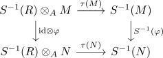
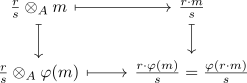

localization as extension of scalars
Proposition
Let \(A\) be a ring, $S \subseteq A$ a multiplicatively closed subset. Then the localization functor for modules is naturally isomorphic to the tensoring functor
\begin{align*}
S^{-1}(-) \simeq - \otimes_{A} S^{-1}A
\end{align*}
Proof
corollary of:
Let
\begin{align*}
\tau(M): S^{-1}A \otimes_A M \rightarrow& S^{-1}M \\
\frac{a}{s} \otimes m \mapsto& \frac{am}{s}
\end{align*}
be the isomorphism (tensor product with the localized ring and localization of a module). It remains to show that this is natural
naturality
Given a module-homomorphism $\varphi: M \rightarrow N$ suffices to show that

commutes
element chasing gives

hence we are done by natural isomorphism and isomorphism on the objects